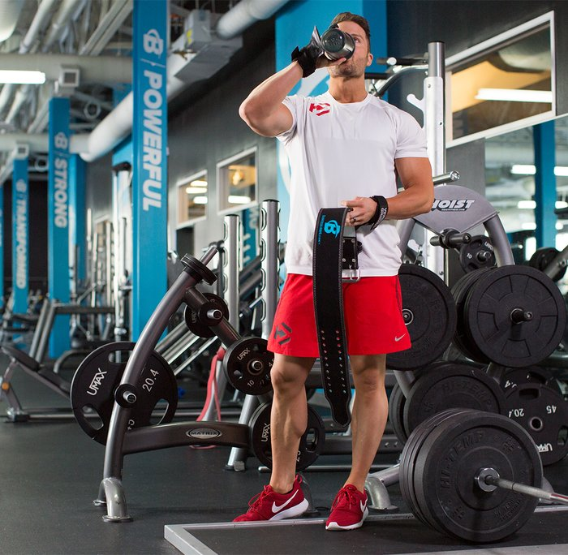

Before each workout, mentally prepare yourself for the exercises to come."I like to do positive self-talk and visualization," says Dymatize athlete and lifestyle coach Brooke Erickson. "I'll visualize myself doing an activity before I begin it. If I'm getting ready to do a long, hard bike ride, I'll do positive self-talk and reaffirm to myself that I'm capable of anything I set my mind to."Don't underestimate how much of a difference your state of mind can make when it comes to performance. The last thing you want are negative voices inside your head telling you that you can't do it.
Some people don't pay much attention to the speed at which they lift, but it can have a big impact on how much stress and tension you put on target muscles "To get the best results, you need to monitor your tempo each time you lift," says Dymatize athlete and certified personal trainer Mike Hildebrandt. "What works best for me is to start with a 4-second negative, a 2-second isometric, and a 1-second concentric contraction."
Hydration is critically important for both training and recovery. Many people don't pay much attention to it, and their performance suffers. According to research published in the Canadian Journal of Applied Physiology, being dehydrated by as little as 2 percent of your bodyweight can impair performance. Drinking enough fluids isn't something you want to ignore.[1]"If you're bored drinking plain water, try adding a scoop of your favorite amino acids or low-calorie flavor enhancer," suggests Hildebrandt.
Drink at least eight glasses of water per day, more on those days you train hard. If you have a big frame and do intensive workouts, you can shoot for as much as two gallons of water a day. Whatever your goal, carry a bottle with you all the time and keep sipping from it. By the end of the day, all those little sips add up.
We've all had those days where just getting to the gym seems way beyond us—never mind actually doing those heavy sets once we get there. Whenever you find yourself in that low-energy situation, take 100-300 milligrams of caffeine, either with a pre-workout supplement or on its own.Caffeine has been shown to help improve focus, increase overall time to fatigue by extending muscular endurance, and may also help boost strength output.[2]It's the perfect ingredient when you want to maximize your training on those sluggish days when your performance would otherwise be sub-par.
Nothing is going to help you recover faster and optimize performance more than a good night's sleep. Sadly, many people skimp on shut-eye. They try to get by on five or six hours of sleep each night, and their workouts suffer.If you want to take your training to the next level, eight hours of sleep per night should be your goal—maybe even nine hours, if you can swing it. Being fully rested can make an incredible difference in how you feel and how quickly your central nervous system bounces back after each workout.
If you struggle to go to sleep at night, try sleep-enhancing techniques such as meditation, deep breathing along with muscle relaxation, hot baths, and using a white noise machine to block out unwanted sounds. Biofeedback can help you identify whether you're holding tension in your body that keeps you from falling asleep